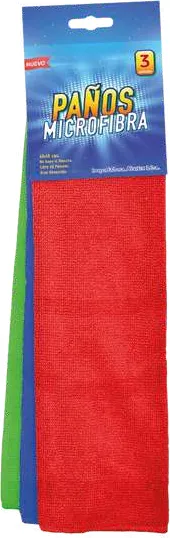

Más vendido

Paño de microfibra
300 g/m² · Libre de pelusas
Ideal para limpiar, lavar, encerar, secar o pulir plástico, madera, goma y cuero. Funciona en zona seca o mojada.
- Medidas
- 40 × 40, 40 × 50 y 40 × 60 cm aprox.
- Material
- 80% poliéster · 20% poliamida
- Colores
- Verde, azul y rojo
- Formato
- Pack de 3 · Por unidad desde 100 u.